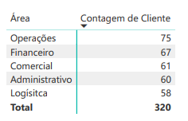
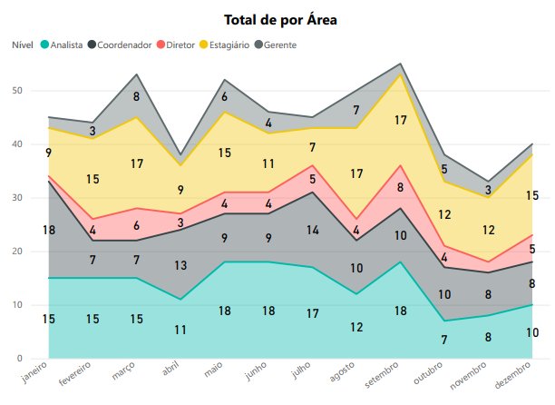
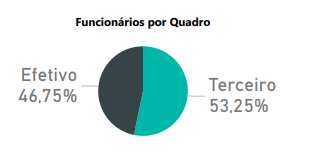
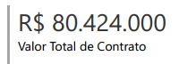
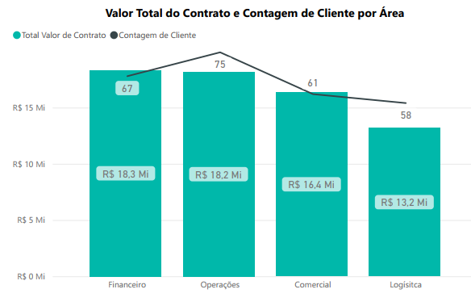
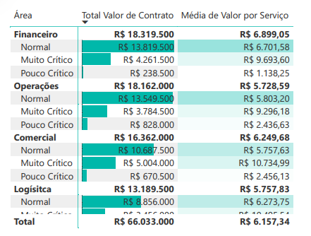
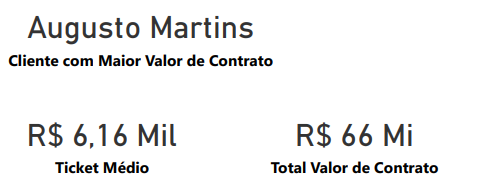

Projeto Análise de Gestão de Recursos Humanos e Performance de Contratos
Introdução
Este projeto foi desenvolvido com o propósito de proporcionar uma visão 360 graus sobre a composição da força de trabalho de uma organização fictícia e a performance de seus contratos, com um foco especial na identificação e gestão de contratos de alto valor e sua criticidade. O dashboard visa empoderar gestores com informações cruciais para a tomada de decisões estratégicas em alocação de pessoal, gestão de riscos financeiros e otimização de operações.
Estrutura do Projeto
Os principais requisitos e indicadores desenvolvidos para esta análise foram:
- Composição da Força de Trabalho: Detalhar o número total de funcionários e sua distribuição por área (Operações, Financeiro, Comercial, Administrativo e Logística) e por nível hierárquico (Analista, Coordenador, Gerente, Diretor, Estagiário).
- Quadro de Funcionários: Apresentar a proporção entre funcionários efetivos e terceirizados, um indicador-chave para entender a flexibilidade e estrutura de custos da equipe.
- Performance Financeira: Exibir o valor total dos contratos e o salário total dos funcionários, oferecendo uma visão geral da saúde financeira e dos custos de pessoal.
- Análise de Contratos por Área e Criticidade: Fornecer uma detalhada segmentação do valor total de contratos e o ticket médio por serviço, categorizando-os por área e por um status de criticidade (Normal, Muito Crítico, Pouco Crítico). Este é um ponto crucial para identificar onde os maiores valores estão concentrados e quais contratos exigem atenção prioritária.
- Identificação de Clientes Chave: Destacar clientes com o maior valor de contrato, permitindo uma gestão de relacionamento mais direcionada.
Tecnologias Utilizadas
Para a construção deste dashboard, a tecnologia principal empregada foi o Power BI Desktop
Dado o escopo do projeto e as informações fornecidas, a fase de prototipação pode ter sido integrada diretamente ao processo de desenvolvimento no Power BI, com iterações rápidas e ajustes de design feitos na própria ferramenta para otimizar a experiência do usuário.
Processo de ETL (Extração, Transformação e Carregamento)
O processo de ETL para este dashboard envolveu as seguintes etapas:
- Extração: Os dados foram extraídos de suas fontes originais, que tipicamente incluiriam sistemas de RH para informações de funcionários, e sistemas de gestão de contratos ou ERP para dados financeiros e de contratos. As bases de dados foram fornecidas em excel, sendo importadas para o ambiente do Power BI.
- Transformação: No Power Query, parte integrante do Power BI, as transformações necessárias foram aplicadas. Isso incluiu a limpeza de dados (remoção de duplicatas, tratamento de valores nulos), padronização de formatos, e a criação de novas colunas ou métricas calculadas (como ticket médio) para enriquecer a análise. A modelagem de dados foi realizada para estabelecer relacionamentos entre as tabelas de funcionários, contratos e áreas, garantindo a integridade e a correta agregação das informações.
- Carregamento: Após as transformações e a modelagem, os dados foram carregados para o modelo de dados do Power BI, prontos para a criação dos visuais e para a interatividade do dashboard.
Dashboard
O dashboard apresenta uma interface clara e organizada, com múltiplos visuais que se complementam para oferecer uma análise completa. Destacam-se gráficos de barras que ilustram a distribuição de funcionários e valores de contrato por área, um gráfico de rosca para a composição do quadro de funcionários, e tabelas detalhadas que mostram a criticidade dos contratos. Os visuais são projetados para serem interativos, permitindo que o usuário explore os dados por diferentes dimensões e filtre as informações conforme a necessidade. A utilização de cores e layouts é pensada para facilitar a leitura e o entendimento rápido dos principais indicadores.
Insights
A análise aprofundada dos dados do dashboard revelou insights valiosos sobre a gestão de RH e contratos da empresa:
Distribuição Equilibrada de Funcionários: A empresa demonstra uma distribuição de funcionários bem pulverizada entre suas áreas operacionais. “Operações: 75”, “Financeiro: 67”, “Comercial: 61”, “Administrativo: 60”, “Logísitca: 58”. Com um total de 320 funcionários, a área de Operações lidera com 75 colaboradores, seguida de perto por Financeiro e Comercial. Essa distribuição indica uma base sólida para as atividades essenciais da empresa.

Em relação aos níveis, há um balanceamento interessante: “Analista (75)”, “Estagiário (69)”, “Coordenador (67)”, “Gerente (65)” e “Diretor (62)”. A alta quantidade de Analistas e Estagiários sugere um foco em execução e desenvolvimento de novos talentos, enquanto a presença robusta de Coordenadores, Gerentes e Diretores assegura a supervisão e a direção estratégica.

Predominância de Terceirizados: Um insight particularmente notável é a composição do quadro de funcionários. “Efetivo 46,75%”, “Terceiro 53,25%”. Mais da metade da força de trabalho (53,25%) é composta por funcionários terceirizados. Essa estratégia pode conferir grande flexibilidade operacional e otimização de custos, permitindo à empresa escalar suas operações de forma mais ágil conforme a demanda. No entanto, também ressalta a necessidade de uma gestão rigorosa dos contratos com prestadores de serviço e um acompanhamento contínuo da qualidade e conformidade.

Grandes Valores de Contrato nas Áreas Chave: O valor total de contrato da empresa é substancial, totalizando R$ 80.424.000.

As áreas de Operações e Financeiro são as que geram os maiores valores.

Esse dado, combinado com a distribuição de funcionários, sugere que as áreas com maior volume de contratos são também as que possuem o maior número de colaboradores, o que é um alinhamento esperado.

Contratos “Muito Críticos” com Alto Valor Médio: Um dos insights mais críticos e acionáveis revelados pelo dashboard é a relação entre a criticidade e o valor médio dos contratos.
Nas colunas “Valor Total de Contrato e Média de Valor por Serviço”, observa-se que, para todas as áreas (Financeiro, Operações, Comercial e Logística), os contratos classificados como “Muito Crítico” consistentemente apresentam um valor médio por serviço significativamente mais alto do que os contratos “Normal” ou “Pouco Crítico”.
Exemplos: Em Financeiro, o valor médio para “Muito Crítico” é R$9.693,60, comparado a R$ 6.701,58 para “Normal”. Em Comercial, “Muito Crítico” atinge R$ 10.734,99.
Isso indica que os contratos de maior porte e maior impacto financeiro são, paradoxalmente, os que mais frequentemente enfrentam problemas ou desafios graves. Esta é uma informação vital para o planejamento de recursos e para a priorização de intervenções.

Identificação do Cliente de Maior Impacto: É possivél rapidamente visualizar o “Augusto Martins” como o “Cliente com Maior Valor de Contrato”. Esta funcionalidade é essencial para o gerenciamento de relacionamento com clientes estratégicos e para a alocação de recursos de atendimento VIP. Ticket Médio Operacional: O ticket médio de R$ 6,16 mil oferece uma métrica de referência para a valoração dos serviços ou produtos da empresa.
Considerações
A análise do dashboard sugere várias considerações estratégicas para a organização:
Gestão de Riscos em Contratos de Alto Valor: A correlação entre criticidade e alto valor em contratos é um sinal de alerta. É fundamental que a empresa estabeleça protocolos robustos de gestão de riscos e alocação de equipes especializadas para monitorar e mitigar os problemas associados a esses contratos “Muito Críticos”. Isso pode envolver revisões de SLAs, planos de contingência e comunicação proativa com os clientes envolvidos. O timização da Força de Trabalho Terceirizada: A alta proporção de terceirizados oferece agilidade, mas também pode implicar em desafios de integração cultural, manutenção do conhecimento interno e controle de qualidade. É importante garantir que os processos de contratação e gestão desses parceiros sejam eficientes e que haja um acompanhamento contínuo de seu desempenho para assegurar a entrega esperada.
Alocação de Recursos: Com base na distribuição de funcionários e na criticidade dos contratos, a empresa pode otimizar a alocação de seus talentos mais experientes para as áreas e contratos que demandam maior atenção, garantindo que os recursos certos estejam nos lugares certos para maximizar o valor e minimizar os riscos.
Foco Estratégico em Clientes Chave: A identificação do cliente com maior valor de contrato (Augusto Martins) permite que a empresa desenvolva estratégias de retenção e expansão personalizadas para seus clientes mais valiosos, fortalecendo parcerias e garantindo a continuidade da receita.
Conclusão
O dashboard foi uma ferramenta analítica de alto impacto, capaz de transformar dados brutos em inteligência acionável para a gestão de recursos humanos e a performance financeira da empresa. Sua principal contribuição reside na capacidade de:
- Oferecer uma visão clara da estrutura organizacional e da distribuição de talentos.
- Destacar a composição flexível da força de trabalho através da proporção de efetivos e terceirizados.
E, crucialmente, identificar e contextualizar o risco associado aos contratos de maior valor, ao correlacionar sua criticidade com seu impacto financeiro.
Este projeto demonstra a habilidade de traduzir complexidades de dados em insights claros e práticos, capacitando líderes a tomarem decisões mais informadas sobre gestão de pessoas, mitigação de riscos em contratos estratégicos e, em última instância, aprimorando a rentabilidade e a eficiência operacional da organização. A sua implementação seria um passo significativo para qualquer empresa que busque uma gestão de RH e contratos orientada por dados.